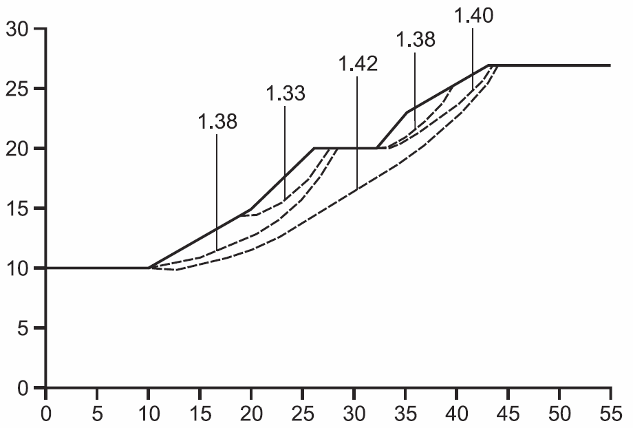
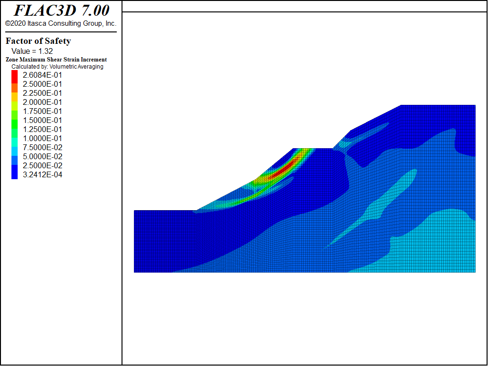
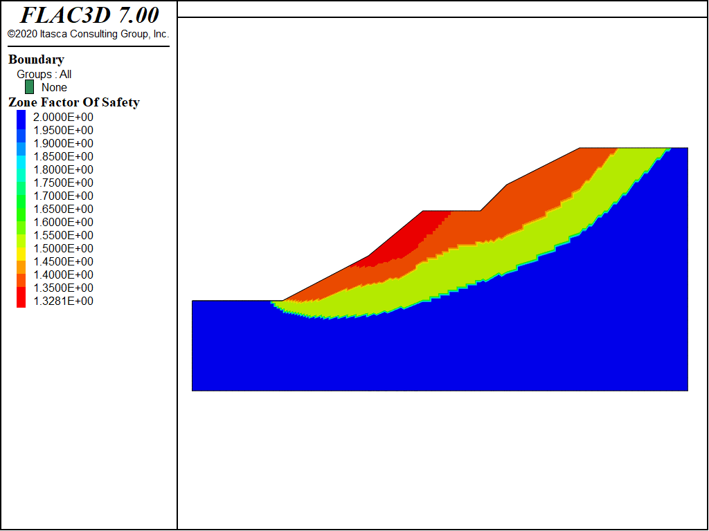

安全系数等值线
问题描述
注意
要在 FLAC3D 中查看此工程，请使用菜单命令 。选择“TheoryAndBackground/FactorOfSafety/ FOSContours”，再选择“FOSContours.f3prj”即可加载。该工程的主数据文件（main data files）在本示例末尾给出。
通常，应用强度折减法时每次模拟只得到一个安全系数，对应一个全局最小稳定状态。不过，计算多个最小状态可能是有意义的，例如对于复杂边坡剖面，如台阶式开挖或带马道的边坡（参见 Cheng 等，2007）。通过一系列采用极限平衡法的分析，可以构建“安全图”，以识别此类边坡的多个可能破坏面（Baker 和 Leshchinsky，2001）。
用强度折减法确定多个局部稳定状态的简单做法是：在进行强度折减计算时排除边坡的不同区域。
另外，FLAC3D 所采用的显式动力求解方法允许在一次 FLAC3D 模拟中识别多个局部稳定面。使用 设置安全系数分析参数（model factor-of-safety） 命令时，对于所测试的每个全局安全系数，都会存储每个网格点的速度大小。这些数据作为模型状态的一部分保存。通过将某网格点的速度数据与限值速度进行比较，可以确定使该特定网格点保持稳定的最大检查安全系数。
通过使用 bracket-limit 关键字，可以保证有足够的测试次数来生成有意义的等值线图。
确定某个网格点应视为稳定还是不稳定的极限速度，可以在计算完成后进行：检查最后一个不稳定状态的速度，并在安全系数图中尝试不同的取值，直到结果看起来可以接受。
该技术通过一个由两段双坡角边坡组成的剖面加以演示，两段边坡之间由水平马道分隔。本示例取自 Cheng 等（2007），他们采用 Morgenstern-Price 极限平衡法得到了该边坡的一组局部最小稳定状态。边坡形态及所得的局部极小值位置见 图 1（Figure 1）。
FLAC3D Model
边坡几何在 Extrusion 窗格中绘制，挤出网格的输入记录保存为数据文件“geometry.dat”。边坡位于 \(x\)-\(z\) 平面内，在 \(y\) 方向厚度为一个网格单元。网格密度通过 extrude set automatic-zone 命令指定。
首先运行 FLAC3D 模拟，使用 设置安全系数分析参数（model factor-of-safety） 命令确定该边坡的全局最小安全系数。结果（见图 2（Figure 2） 中的剪应变云图）为全局最小安全系数 1.32，其多重破坏面对应于图 1（Figure 1） 下部边坡中所示安全系数最小的两个面。使用 bracket-limit 关键字以保证安全系数测试间隔最小为 0.05。


图 1：带马道边坡极限平衡解的局部极小破坏面（引自 Cheng 等，2007）。


图 2：带马道边坡的全局最小安全系数。
本示例生成的安全系数云图见图 3（Figure 3）。该云图与图 1（Figure 1） 中的局部极小破坏面图吻合相当好。请注意，图 3（Figure 3） 中的全局最小等值线（安全系数为 1.33）与图 1（Figure 1） 中最小的局部极小破坏面高度吻合。次一条等值线（在马道下方为 1.35、上方为 1.4）也与图 3（Figure 3） 中识别出的破坏面吻合良好。安全系数云图还显示出一种等值线形状（例如见图 3（Figure 3） 中的 1.45 等值线），其在马道下方上弯。请注意，极限平衡法未体现这种对破坏面形状的影响；可与图 1（Figure 1） 中的 1.42 破坏面进行比较。
本练习表明，通过监测材料强度逐步折减过程中不稳定区域（由高网格点速度定义）的发展来判别破坏，强度折减法可在一次模拟中给出多个潜在破坏面。


图 3：带马道边坡的安全系数等值线。
参考文献
Baker, R. 与 D. Leshchinsky。“安全系数的空间分布”，J. Geotech. Geoenviron. Eng.，127(2)，135-45（2001）。
Cheng, Y.M., T. Lansivaara and W.B. Wei. “Two-dimensional slope stability analysis by limit equilibrium and strength reduction methods,” Computers and Geotechnics, 34, 137-150, 2007.
数据文件
BermFOS.dat
model new
; 在二维拉伸工具中创建几何体，并从状态记录中导出。
program call 'geometry' suppress
model large-strain off
extrude set automatic-zone direction construction size 160
zone generate from-extrude
zone face skin ; 标记模型边界
; 分配本构模型和属性
zone cmodel assign mohr-coulomb
zone property bulk 6.25e6 shear 2.88462e6 density 2000
zone property cohesion 5000 friction 30 tension 1e100
; 指定边界条件
zone face apply velocity-normal 0 range group 'East' or 'West'
zone face apply velocity-normal 0 range group 'North' or 'South'
zone face apply velocity (0,0,0) range group 'Bottom'
model gravity 10
model solve elastic convergence 1
model save 'initial'
; 求解初始安全系数
model factor-of-safety convergence 10 filename 'Berm' bracket-limit 0.05
; 保存包含安全系数信息的初始状态
model save 'final'
| 这些内容对您有帮助吗？… | FLAC3D © 2019, Itasca | 原文更新于 2020 年 10 月 8 日 |